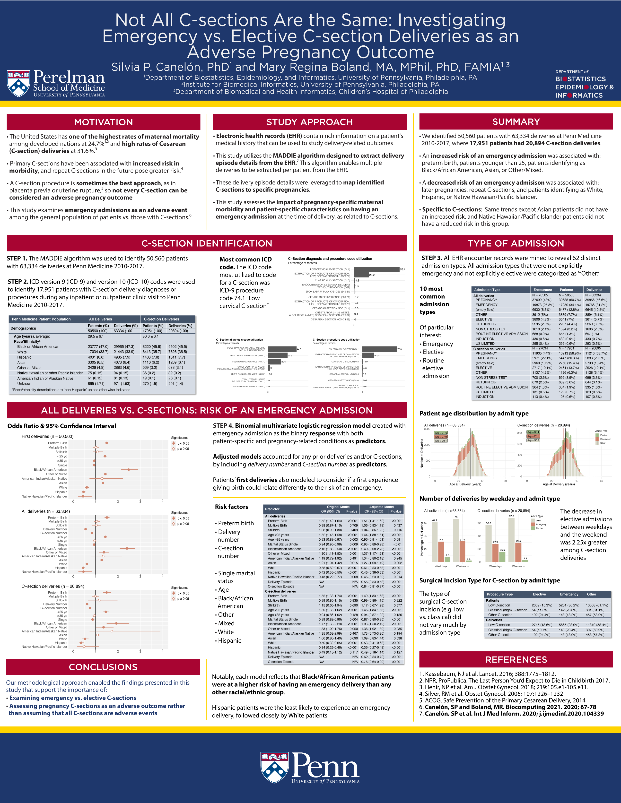

Not All C-sections Are the Same: Investigating Emergency vs. Elective C-section Deliveries as an Adverse Pregnancy Outcome
Biocomputing 2021
By Silvia P. Canelón & Mary Regina Boland in Research
December 10, 2020
Abstract
Electronic Health Records (EHR) contain detailed information about a patient’s medical history and can be helpful in understanding clinical outcomes among populations generally underrepresented in research, including pregnant individuals. A cesarean delivery is a clinical outcome often considered in studies as an adverse pregnancy outcome, when in reality there are circumstances in which a cesarean delivery is considered the safest or best choice given the patient’s medical history, situation, and comfort. Rather than consider all cesarean deliveries to be negative outcomes, it is important to examine other risk factors that may contribute to a cesarean delivery being an adverse event. Looking at emergency admissions can be a useful way to ascertain whether or not a cesarean delivery is part of an adverse event. This study utilizes EHR data from Penn Medicine to assess patient characteristics and pregnancy-related conditions as risk factors for an emergency admission at the time of delivery. After adjusting for pregnancy number and cesarean number for each patient, preterm birth increased risk of an emergency admission, and patients younger than 25, or identifying as Black/African American, Asian, or Other/Mixed, had an increased risk. Later pregnancies and repeat cesareans decreased the risk of an emergency delivery, and White, Hispanic, and Native Hawaiian/Pacific Islander patients were at decreased risk. The same risk factors and trends were found among cesarean deliveries, except that Asian patients did not have an increased risk, and Native Hawaiian/Pacific Islander patients did not have a reduced risk in this group.
Conference
Pacific Symposium on Biocomputing (PSB) 2021
Session
Advanced Methods for Big Data Analytics in Women’s Health

- Posted on:
- December 10, 2020
- Length:
- 2 minute read, 263 words
- Categories:
- Research
- See Also:
- Medication-Wide Association Study Using Electronic Health Record Data of Prescription Medication Exposure and Multifetal Pregnancies: Retrospective Study
- Exploring Traumatic Brain Injury Mechanisms and Severity Using Electronic Health Records
- Design and Evaluation of a Postpartum Depression Ontology